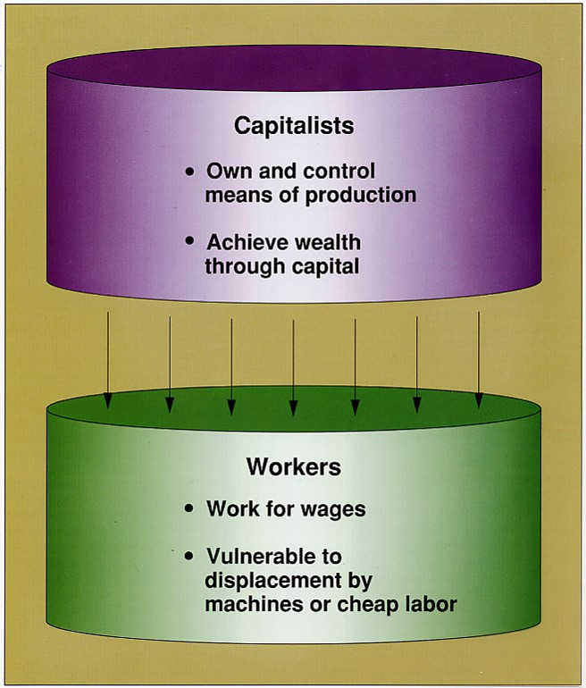

Week 7 Social and Global Class
4 October, 2017
Levi Sands
In-Class Activity
Take out a sheet of paper and write down a few ideas to answer each of the following questions
- What social class do you belong to?
- How do you know which class you belong to?
- What factors determine your social class?
- What circumstances or actions lead to poverty
Homework Items
- Font size
- Spacing
- Blank pages (really!?)
Early Ideas of Inequality
- Karl Marx and conflict theory - Economic Foundation, class division and class conflict
- Max Weber - Power, Prestige, and Wealth
- Power - The chance of an individual or group to realize their will in social action, even when faced with opposition from others
- Prestige - The respect or standing that an individual obtains through appointment or accomplishment
- Wealth - Property, Income
Marx vs Weber
Class according according to Marx
Marx vs Weber
Class according to Weber

American Class System
- Dimensions of Class
- Economic
- Income/Wealth
- Occupation Prestige
- Education
- Behavioral
- Patterns of Speech
- Material Items
- Tastes (music, clothing, electronics, etc.)
- Leisure Activities

Source: US Census Bureau
Source: US Census Bureau
Perception of The american class system

Class Definitions
- Upper - (the 1%) more than 1 M
- Upper Middle - 18-20% 80 k to 1 M
- Lower Middle - 25-30% 45-80 k
- Working Class - 25-30% 30-45 k
- Working Poor - 12-15% 15-30 k
- Underclass - 9-12% Less Than 15 k
- 4-Y & Post Grads
- 4-Y & Post Grads
- HS & Some College
- HS
- Some HS
- Some HS
Don't Forget Job Status


What can we do about poverty and inequality?
(briefly discuss in your groups, we will then discuss as a class)
- What responsibilities do we have for helping the poor in our country?
- Is income inequality an issue?
- Our country spends under 1% of our annual budget on foreign aid (source: Center for global development). Is this enough? Should it be less?
Group Activity
Give examples or definitions (where examples are impractical) of each of the following on a sheet of paper
- Culture of poverty
- Concentrated poverty
- Social mobility
- Meritocracy
- Socioeconomic status (SES)
Themes
reveal.js comes with a few themes built in:
Black
(default) -
White
-
League
-
Sky
-
Beige
-
Simple
Serif
-
Blood
-
Night
-
Moon
-
Solarized
Themes created by Levi Sands
Udub
-
USU
-
Uiowa
-
Gonzaga
-
EWU